Once you've uploaded a completed Form to Process Director, you can make changes to the Form Definition to add many different types of useful functionality.
In the Properties section of the Form definition, there are a series of tabs arrayed down the left side of the definition. In order to make changes to the field definitions, Form Controls tab.
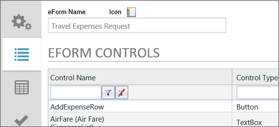
Figure 52: Form Definition Form Controls tabs
You will notice that Process Director has conveniently grabbed all of the fields you created in the Form template, and listed them for you. The field list enables you to set more field properties for each field, as well as add commands that modify how the Form works for the user.
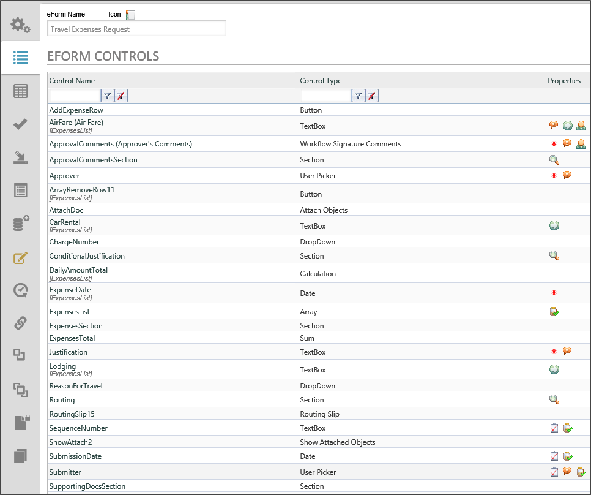
Figure 53: Travel Expenses Request Form Field Properties
The sample shown in Figure 53: Travel Expenses Request Form Field Properties displays the finished properties for the Travel Expenses Request Form. As you make property changes to the Form fields, icons relating to the properties will appear on the field's row. For instance, the AirFare field of the Travel Expenses Request Form shows the following icons.
Figure 54: AirFare Field Property Icons
These Icons show you what properties have been set. The first icon is for the ToolTip, the second is the Event icon, and the third is the Friendly Name icon. If you hover your mouse over an icon, a ToolTip will appear that notifies you what the property settings are.
To open the properties dialog box for a field, click on the Edit link in the commands column of the Form controls list, or click on the name that appears in the Control Name column. In either case, the Properties dialog box will open for the field.
One of the practices that we recommend for any form is to always have a set of standard controls that are part of every form. At BP Logix, we generally include four standard fields on every form we create.
This practice has been incorporated into the sample project by adding a routing slip and the SequenceNumber, SubmissionDate, and Employee fields.
Open the Form Controls tab of form definition for the Travel Expenses Request 2 that you created earlier. As was the case when we were editing the template using Word, we want to be sure that we’re saving our work frequently as we go along. When working with field properties, the do so by clicking the Update button on the bottom of the page.
Once you have opened the Form Controls tab, click the Edit link for the AirFare field to open the properties dialog box.
In the properties dialog box, set the following properties"

Figure 55: Form Field Properties - AirFare
Click the OK button to close the dialog box.
Now, open the ApprovalComments properties.
When finished, click the OK button to close and save the properties you’ve set.

Figure 56: Form Field Properties - Approval Comments
Now, open the properties for the ApprovalCommentsSection, the Section control that houses the approver’s comments. We want to set the properties that will allow us to hide the approver’s comments when the form is opened by the initial user. Only approvers need to see this section of the form, so we are going to hide it when the form is initially created.
Select “Field is Hidden When…” from the Set Display Options dropdown. Selecting this property will add two items on the right side of the dropdown. One item is a text link that is labeled “Click to create condition…”. The other item is a check box labeled “Otherwise visible”. These are the properties that will control the section’s visibility.

Figure 57: Visibility Dropdown
Click on the text link that is labeled “Click to create condition…” to open the Conditions For dialog box, where we will add the conditions must apply to make this section of the form visible.
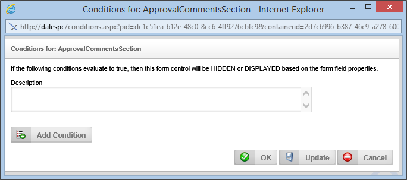
Figure 58: Conditions For ApprovalCommentsSection dialog box
Click the Add Condition button to add a condition section to the dialog box. The first control in the condition is a picker control that will most likely have “Form Field” displayed in the textbox portion of the control. We need to change this, so click on the picker control’s Build button to open the Choose System Variable dialog box.
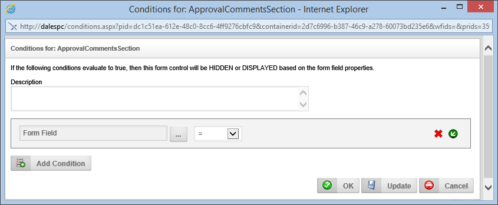
Figure 59: Choose System Variable dialog box
At the top of the dialog box is a dropdown menu that is labeled “Form Field”. Click on this dropdown menu and select Form >> New Form Instance? as shown in Figure 60: Choose System Variable for New Form below.
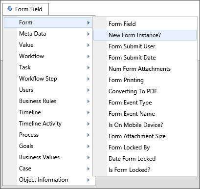
Figure 60: Choose System Variable for New Form
This will instruct Process Director to check if the form is being created for the first time. Click the OK button to close the Choose System Variable dialog box, which will return you to the Conditions dialog box for the control.
The picker control for the condition should now be labeled “New Form Instance?”. Set the remainder of the condition to “=” and “Yes” using the dropdown controls, so that the final condition looks like the condition shown in Figure 61: Condition Properties Setting, below.

Figure 61: Condition Properties Setting
Once you have set the condition settings, click the OK button to close the dialog box to return to the Properties dialog box for the ApprovalCommentsSection. Click the OK button to save and close the properties dialog box.

Figure 62: Form Field Properties - ApprovalCommentsSection
Open the properties for the Approver field.

Figure 63: Form Field Properties - Approver
Open the properties for the CarRental field, and check the Event Field check box.

Figure 64: Form Field Properties - CarRental
Open the properties for the ConditionalJustification field.
We are going to need to set a condition for visibility, just as we did for the ApprovalCommentsSection. In this case, we will set a form field value to make this control visible if the total expense amount exceeds $1,000. Click the text link next to the Set Display Options dropdown that is labeled “Click to create condition…” to open the Conditions For dialog box.
In the Conditions For dialog box, click the Add Condition button to display a condition box. Click on the Build button to display the Choose System Variable dialog box. The dialog box is already set to “Form Field”, so, from the dropdown control labeled “[Select Form Field]”, select “ExpensesTotal”, and then click the OK button to return to the Conditions For dialog box.
In the Conditions For dialog box, set the operator to “>”, the Field Type to “Number”, then enter “1000” into the textbox. Your condition should look like Figure 65: ConditionalJustification Condition below.

Figure 65: ConditionalJustification Condition
Click the OK button to save the condition and return to the Form Field Properties dialog box.
Check the Otherwise Hidden check box to ensure the control is hidden unless the condition is true. Click the OK button to close the dialog box and save the properties.

Figure 66: Form Field Properties – ConditionalJustification
Next, open the properties for the ExpenseDate field. Set the following properties:

Figure 67: Form Field properties – ExpenseDate
The ExpensesList control is the Array that will display each row of the daily expense estimate on the form. By default, the Array will start out empty. Of course, there will always be at least one row for the expense request, so we need to ensure that when the report opens, there will be one row displayed and ready to be filled out. So, set the Default Value type to “Number”, and the value to “1”.

Figure 68: Form Field Properties – ExpensesList
Open the properties for the Justification field. Set the ToolTip to “Justification is required when the total amount is greater than $1,000”. We’ve already set the visibility condition for the Section that contains this control, so this control will only be visible when that section is visible: remember, properties like visibility are inherited.

Figure 69: Form Field Properties - Justification
Open the Lodging field properties and check the Event Field check box.

Figure 70: Form Field Properties - Lodging
Open the properties for the Routing field. The Routing field is another Section control, like the ApprovalCommentsSection, that we don’t want to display when the form is opened by the initial user. Set the display condition for this field just as you did with the ApprovalCommentsSection field, so that the field is hidden if the form opens as a new form instance.

Figure 71: Form Field Properties – Routing
The SequenceNumber field is the first of the four standard controls discussed earlier. To set up the sequence number, open the SequenceNumber field properties.

Figure 72: Form Field Properties - SequenceNumber
The SubmissionDate field, just like the SequenceNumber, is a field that should be a standard field on any form. It should also be a read-only field that is populated automatically by Process Director. Open the SubmissionDate field’s properties.

Figure 73: Form Field Properties – SubmissionDate
The third and final standard field that will be both read-only, and automatically populated by Process Director, is the Submitter field.

Figure 74: Form Field Properties - Submitter
Once you’ve set the Submitter properties, you’re done with setting the form field properties for now. We will need to return to the properties in a little bit to set the values that appear in the Form’s dropdown controls for the Charge Number and the Reason for Travel.
Process Director often provides a number of ways to accomplish the same task, which is one of the things that makes Process Director so versatile. In the sample Form, the dropdown controls for the Charge Number and the Reason for Travel use two different methods for filling dropdowns.
One of the most common requirements for any organization is to use existing databases to populate form fields. In the case of the ChargeNumber dropdown, the options that populate the dropdown are extracted in just this way. What we will do, though, is apply the imported database values to the ChargeNumber dropdown.
The sample project imports an Excel spreadsheet into a database to populate this dropdown control. There is an Excel spreadsheet named ChargeNumbers.xlsx in the sample project. You can check out and edit this spreadsheet, and when you upload it, it will automatically be imported into the database. The import is done via a Database Connector in the sample project, which is named ERP Import. We are going to retrieve the data using a Business Value named ERP Data. We aren’t going to dive into the process for creating Datasources or Business Values in this walk-through, but you should know that this is the source of the database values, in case you want to experiment with it later
To pull the data from the database to fill a dropdown control, we will use the Fill Dropdowns tab of the Form definition.
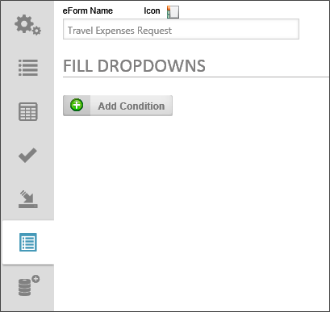
Figure 75: Fill Dropdowns Tab
Click the Add Condition button to add the configuration options for the dropdown we want to fill.
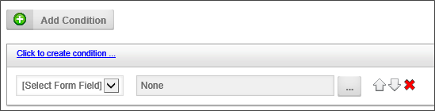
Figure 76: Configuration Options
In the conditions box, select the Charge Number field, since this is the dropdown we will want to fill from the database. Once you have done so, click the Build button on the object picker to open the Choose System Variable dialog. Select the business Value for the data by opening the Menu and selecting Business Values > Getting Started Guide > ERP Data.
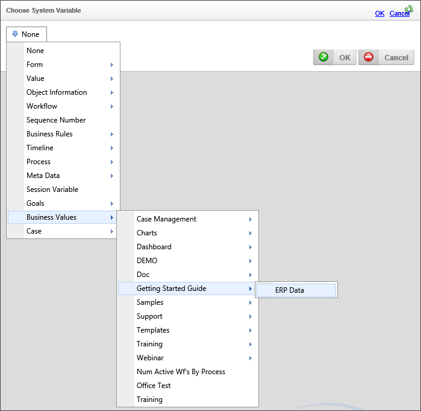
Figure 77: Choosing the Business Value
Once you select the ERP Data Business Value, the dropdown configuration screen will appear. In the dropdown configuration, you can configure an empty entry by typing [Select One] in the Empty Selection box. This is the default selection that will appear in the dropdown before a value is selected. Set the [Select Property for Display text] dropdown to Description and the [Select property for Value] dropdown to Charge Number. This configuration will set the Dropdown to display the charge number's text description to the user, but will store the actual Charge number in the Form's data.
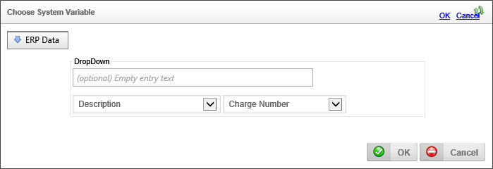
Click the OK button to save your configuration and close the dialog box.
Figure 78: Dropdown Configuration
We’ve made a lot of changes to the form definition, so click on the OK menu button at the top right of the Form definition screen to save our changes.
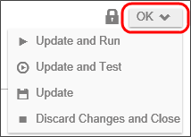
Figure 79: OK Menu Button
Once the Form definition is saved, you will be returned to the root folder of the sample project.
To create a Dropdown Object to fill the ReasonForTravel dropdown, navigate to the BP Logix Getting Started Sample Project directory, and select “Dropdown Object” from the Create New… dropdown located in the upper right portion of the content list window to open the screen for creating a new Dropdown Object. When the screen appears, it will initially consist of only an empty textbox for the Dropdown Name. Type “ReasonForTravel" in the Dropdown Name textbox, then click the OK Button. The configuration screen for the Dropdown object will open.
In the Properties tab, type a brief description into the Description textbox.
In the Items tab, Check the Add null/blank… check box, then add the text “Select a Reason” in the textbox provided to set a default value for the Dropdown object, and instruct the user to pick a value from the list we will create. To create the list, click the Add Dropdown Entry button.
Figure 80: Add Dropdown Entry Button
When you click the Add Dropdown Entry button, the configuration properties for the first item in your Dropdown appears. In the Name textbox, type “Professional Conference”. Click the Add Dropdown Entry button and type in a Dropdown Name for as many items as you’d like to enter. The sample entries are shown below.
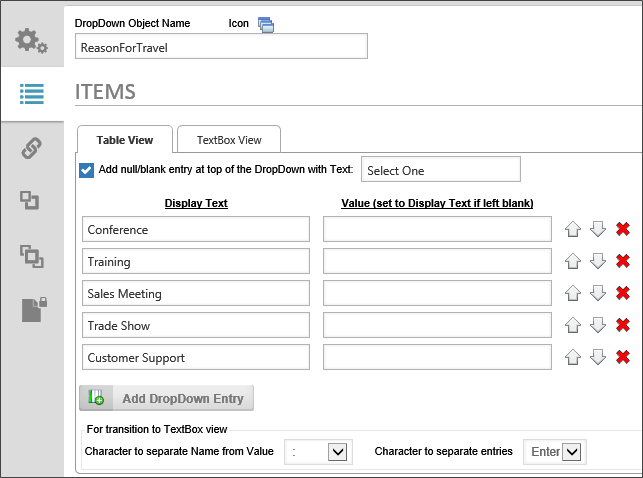
Figure 81: ReasonForTravel Dropdown
When you’re done adding items, you may want to change the order in which the items appear in a dropdown control on a Form. You can use the up or down arrows on each row to move objects up or down in the list. You can also click on the button with the red “X” icon to delete an item from the list.
For the purposes of this project, we’ll leave the Dropdown Values blank. (Process Director will simply use the display text as the value.) Once you’ve added the items you want to the list, click the OK menu button to save and close the Dropdown definition.
Now that the Dropdown has been saved, we have to connect it to the appropriate field within the Form we created. Open the Form definition, and click on the Form Controls tab.
Open the properties for the ReasonForTravel field. In the Form Field properties dialog box, there is a Picker control labeled, “Link to Dropdown object”. Click the Picker control’s Build button to open the Choose Dropdown dialog box.

Figure 82: Choose Dropdown Dialog Box
Select the ReasonForTravel2 dropdown control to populate the dropdown control on the Form. Click the dialog box’s OK button to save and close the properties, then click the OK button to save and close the form definition.
Now your Form has two dropdowns that are populated in two different ways.